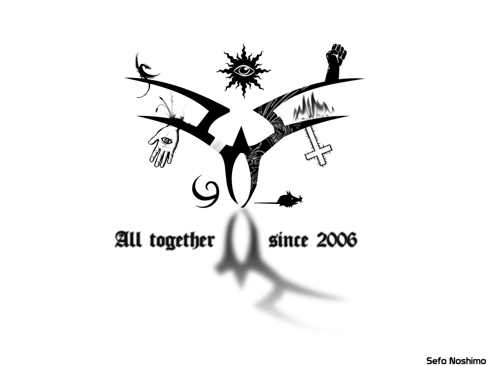
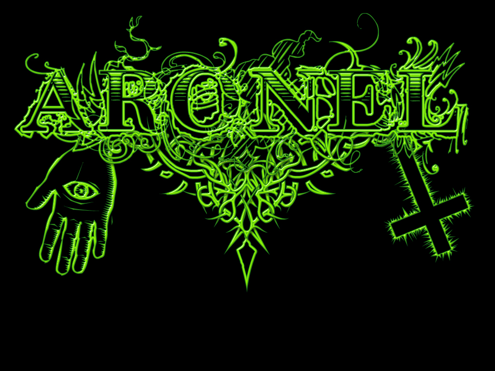
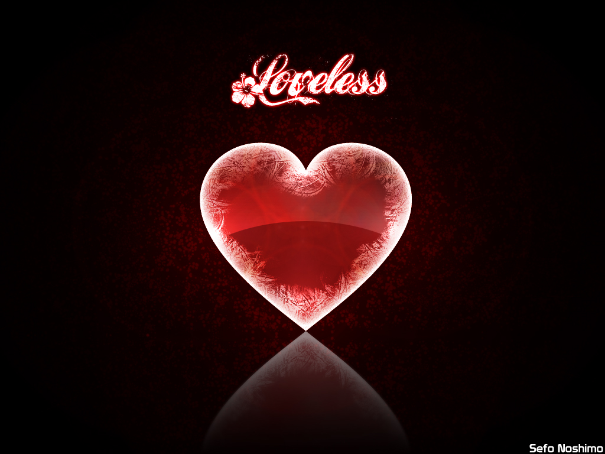
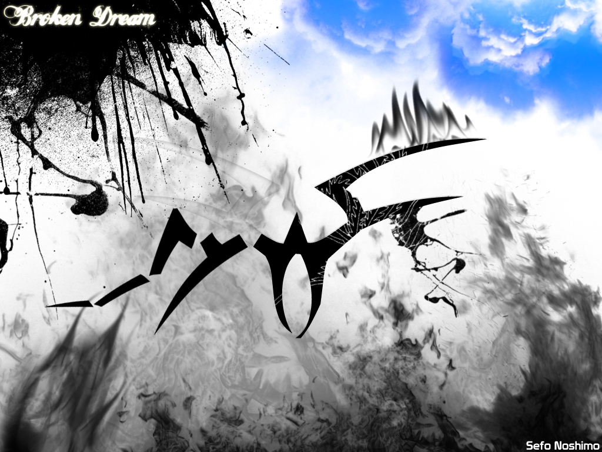
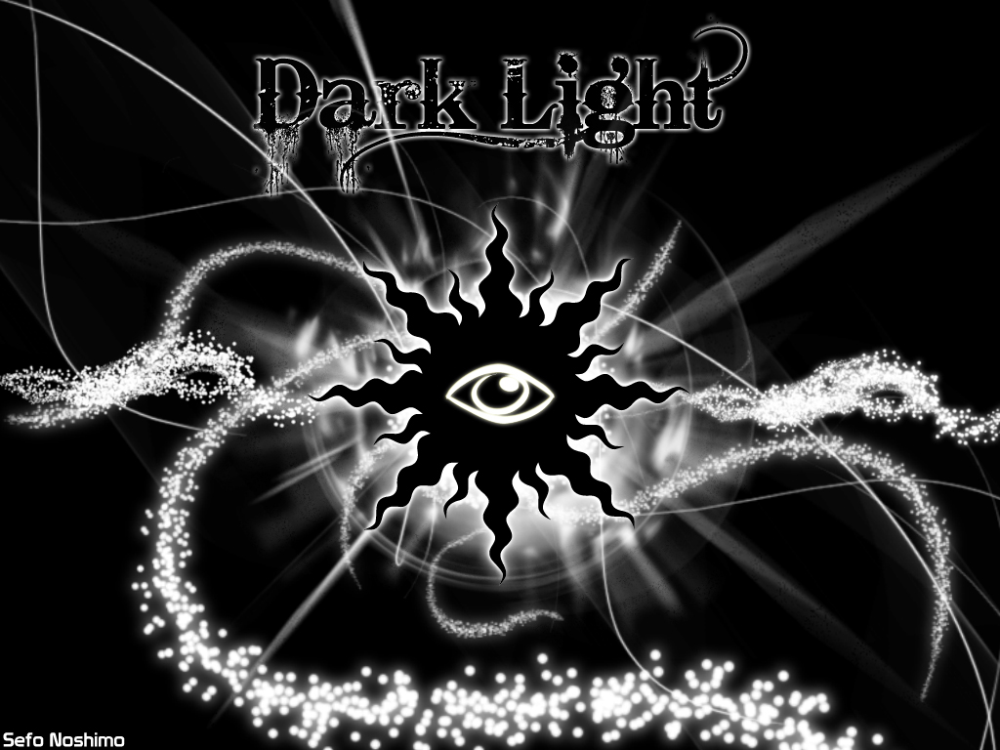

{kind=link}
All Together 2012

{kind=link}
Aronel 2008

{kind=link}
Loveless 2010

Prodigy Rat 2011

{kind=link}
Broken Dream 2012

{kind=link}
Dark Light 2012
К ним, три года спустя...
Плохие новости: я отключил вам скролл, а ещё утилизировал свою команду, но о последнем чуть позже... А сейчас нам понадобится карта, которая когда-то была самой бестолковой и ненужной здесь вещью.
Я проведу вас сквозь тернии Тьмы к истокам Света.
Ну что, пристёгивайтесь покрепче, верстать буду быстро, грубо и самобытно. Всё как мы любим. Смотреть на страницы будем с высоты трёхлетней давности.
Полетели!
И вот ещё что, отныне не на ты, а к вам.
Здесь я с гостями, а персонажи лично с тобой.
Последний выпуск № 9
2012–2020
9 мая 2020 года
Да, да, вам не послышалось, теперь при включении следующего трека, предыдущий останавливается. Эту фичу просили все, без исключений. Всего-то понадобилось 10 лет на реализацию.
Я аккумулировал и учёл весь фидбек, который удалось вспомнить. Ничто и никто не забыт. Этот многострадальный сайт никогда не стал бы таким без обратной связи. Спасибо всем, кто откликнулся.
Карта отныне выполняет своё прямое назначение, кто бы мог подумать? Это было одним из самых дерзких нововведений, которое я со крипом зубьев принял. И да, от неё по-прежнему веет временами Народа.ру.
Настоялось ли всё сейчас, сейчас готово или такое себе?
Музыка на каждой второй странице явно была лишняя, особенно учитывая, что её нельзя было остановить следующей композицией. Хотя думаю, что плеер органично вписался бы сюда. Я всё ещё мечтаю написать собственный саундтрек для сайта...
Всё, что было окутано мраком и тенью тайны, отныне стало явью. И в самом деле, по статистике единицы находили пасхалки, и то, с моими подсказками. Но не волнуйтесь, кое-что я всё-таки припрятал здесь.
Помню, как вы объясняли мне, что такое поля у газеты и что такое полароид. А я потом тайком изучал и вдохновлялся настоящим выпуском The Times. И вот мы читаем победоносный выпуск...
Телевизор теперь действительно показывает передачу. Для этого торжественного события я снял заключительный эпизод легендарной саги Оставленных для Легенды.
Сомнительный игровой автомат отправился на свалку. Может когда-нибудь модернизируем его? За прошедшие года веб версия Авемарины сломалась.
Я посадил «сову» из шапки праздничной страницы в клетку и переосмыслил визитку. Радио и рассказы были упразднены.
Мне очень жаль, но текущее разрешение поделило газету на ноль. Растяните экран хотя бы на тысячу пикселей.
Дорогой дневник, когда я сверстал тебя, сами панельки Москвы прошептали это имя… Я думал, что каждая запись будет начинаться с этого трогательного обращения. Но за десять тысяч лет, я так и не научился вести свой бортовой журнал. А когда спохватился, то было уже поздно. Теперь мой поток сознания транслируется в телеграм канале.
Вся трудность моих рассказов заключается в том, что так или иначе, они начинаются задним числом. Я всегда спешу, а ты опаздываешь и никто, никогда не бежит друг к другу на встречу. Похоже, что мы пересечёмся лишь в Ином мире...
Наверное, только я могу сделать даже из такого несущественного события — целый спектакль.
Что ж, да будет так.
Открепляю намертво прибитую запись.
Спасибо, что держал мои удары и хранил горькую боль.
С трепетом и теплом, твой автор.
«Просьба освободить вагоны»
Госпожа Тьма поглотила всех пассажиров и уничтожила всё на своём пути.
Конец рассказа.
All Together 2012
Aronel 2008
Loveless 2010
Prodigy Rat 2011
Broken Dream 2012
Dark Light 2012
Milandro Noshimo — Amona (2016)
Milandro Noshimo — Still Alive (2011)
Milandro Noshimo — Aronel (2010)
Дорогая хоумпаженька, сделанная где-то на окраине Москвы, ты стала иконой Состояния и зеркалом духовной войны. Мне жаль, что госпожа Тьма так часто прерывала наш аптайм. Больше десяти лет я заботился о тебе как о лучшем творении и было таково.
На том и стоим.
Ты так похорошела после Ношимо, что я ответственно дарую тебе титул сайта.
Торжественно перезапускаемся и выходим на уровень следующей Легенды.
Версия 4.25 сборка 161220
Сайт взлетел за %learn_JS%
Гостевой билет №
>_
Давным-давно я что-то там хотел себе доказать. Мол, смогу ли за пару недель накодить игру с нуля до сотни?
И вообще, это должен был быть долгожданный Party Shooter, а получились какие-то лодки...
Прошло так много времени, что веб-версия сломалась, видать, что-то в свежих браузерах подкрутили, а лицензия на продажу в стиме уже стоит восемь тысяч.
Ну что, пускаю исходники в свободное плавание, может найдётся герой, который спасёт эту тонущую историю.
Глядишь, чего вместе додумаем, ведь ядро вполне себе боевое.
Всплываем!
Последняя рабочая версия: Avemarine1.3.exe
Проект: Avemarine.zip
ГитХаб: github.com/SefoNotasi/Avemarine
Сефо( 11 )Нотаси
Знойный летний день 2009 года.
Раздаётся гудок.
Помните?
Бронепоезд. Чертовски Бронированный и Святой, который мчался на встречу аварии.
Знаете, что за день сегодня?
Корабль, который потерпел крушение. Судно, чьё брюхо вспороли рифы. Капитан тонул с вытянутой рукой и показывал неприличный жест.
Назовите эту дату, ну же!
Нас выбросило на остров. Мы возвели летучий хрустальный замок и взлетели на облаках. Боже, почему никто не сказал, что это была худшая идея? Ведь он был настолько хрупкий, что при первом же ударе рассыпался на глазах.
Раздается громкий хлопок.
Мы упали, но не разбились. Мы оставляли за собой след из пустых бутылок и окурков. Наш путь был настолько деструктивен, что...
Пробка вылетает из бутылки с шампанским.
Рифы, шторм, чайки. Проклятые чайки, они хотели склевать лицо! Кыш!
День, в котором мы обязаны поднять бокалы и выпить.
Путь разрушения во имя прекрасного и абсолютно совершенного.
Раздаётся звон бокалов.
Невероятное путешествие и история о том, как Тьма поглощала нас, а мы бросили ей вызов в ответ, чтобы обрести Свет.
Выпьем!
Кто бы мог подумать, что мы зайдём так далеко...
Я с вами, а вы со мной.
Спасибо, ревернас.
Как вам новая визитка, отпад, не так ли? Ну в самом деле, не логотип же очередной сюда лепить. SefoNotasi@gmail.com
Здесь внезапно заканчивалось предыдущее путешествие. Да, именно так и никак иначе. Всё, это был полный ФИН, пускались титры. Всемогущий тормозил планету. Население колеблелось в пределах от полутора до двух человек. Тем посвящалось, кто приходил, уходил и шума много натворил.
Ныне город мёртв, билборд и вырви-глазную карусель снесли.
И как это могло занять тогда три месяца? Пожимаю плечами. Зато исходники позволили мне полностью перезапустить всё за три дня. А вы говорили, что мои бекапы — это шиза. Всегда и везде сохраняйте наработки, даже сырые и черновые. Сделайте копию своего добра прямо сейчас! Потом разберётесь и скажите спасибо.
Ну что, по всей видимости, наша следующая остановка — Нотавиль?
И выпали наружу все внутренности мои.17.11.2012
♥ ♥ ♥ ♥ ♥ ♥ ♥ ♥ ♥
Садитесь...
Садитесь, дамы и господа.
Да, благодарю, благодарю всех присутствующих, да, да.
Садитесь, садитесь.
Итак, мы собрались здесь, на этой странице...
Да, да, мадам, входите, конечно же...
Ты тоже, не прячься, не стесняйся, входи и присаживайся, виновница торжества.
Мы собрались сегодня на этой странице, чтобы почтить память нашего четверокрылого Ангела. Безымянного и Безликого. Любящего мужа...
Что?
Ох, простите, я совсем забыл, что покойный не был женат...
Точно, у покойника даже верной возлюбленной не было, какая скорбь.
Да.
Мы собрались здесь, на этой странице, чтобы почтить память нашего любимца.
Выдающийся сценический образ. Достойный уход со сцены.
Ну да...
Упомянутый отправился в путь и не вернулся.
Предан и брошен.
Ему даже личные вещи не вернули, какая мерзость.
Да.
Я лично знал его, могу сказать, что нигде и никогда мне не доводилось видеть столь страдальческого создания.
Что же...
Да.
Он не был плохим или хорошим, он был терпимым. Он пожертвовал всем своим временем ради продолжения времени моего. Он настоящий Герой.
Люди окрестили его Легендой.
И приложу я все усилия, дабы жертва его не была прозрачной. Моё несчастное чадо, бедное дитя, лучшее творение. Я продолжу эту эстафету, которая передаётся из поколения в поколение. Я сохраню семейные традиции.
Мы ведь одна большая Семья, помните?
Сколько раз крылья его отрезали, сколько раз распяли его, всегда, слышите, он всегда вставал на ноги и расправлял крылья новые. Его духовные поля сжигали, и он взращивал новые, ещё гуще, насыщенные душистым хмелём и ячменём. Его мечты разбивали, но он продолжал бороться и возводил целые замки на облаках. Его предавали, стреляли прямо в сердце и он, нет, вы не поверите... И он ни разу не занял место безбожного циника. Его Солнце угасало, но он сохранял тлеющие угольки надежды...
Что ж...
Я породил его, я и исполню его последнюю волю, вырежу лицо, дабы разум его смог отправиться в глубины вселенной для поиска нового, сияющего мира, в котором мы непременно встретимся и опрокинем парю рюмок.
Путешествуй безмятежно...
Титулованная Легенда первого ранга.
Явление его, подобно второму пришествию Иисуса Христа, всегда сопровождалось тлеющими частицами Сердца Оригами, но...
Но, что это?
Этого...
Этого просто не может быть.
Невозможно!
Нет, я не верю.
Я не верю собственным глазам.
Чудо из чудес в небесах!
Ты тоже видишь это?
С неба мягко начали падать хлопья белого снега.
Аминь.
Помимо бородатых шуток, лиса до сих пор не умеет в анимацию background-image. Я верстать начал, когда HTML 5 и Edge не было в природе, а лиса до сих пор хуже всех отрисовывает сайт. Что не так с людьми, которые топят за неё? Вроде всегда шутили про старого лагучего-багучего осла с костылями, а она в 2020 не умеет в современные технологии. Если она якобы кушает на 30% меньше рама, чем хром, то она и работает на 30% ХУЖЕ, чем хром, алло!
Посмотри для наглядности как безупречно выводит этот сайт хром. Ну не может быть хорошим браузер с ободранной лисой в логотипе от компании с названием МАЗИЛА.
Сносите к чертям этот блохастый мусор!
Вот это мне напекло, блин, нафиг.
| A problem has been detected and system has been shut down to prevent damage to your mind. | |
| The problem seems to be caused by the following file: Emerald_Queen.exe | |
| Loading version | 4.0 build 250520 |
| Loading brain.sys | ОК |
| Loading hands.dll | ОК |
| Loading heart.exe | Damaged |
| Loading soul.cfg | Corrupted |
| Loading memory.inf | ОК |
| Loading voice.lib | ОК |
| Emerald Queen: | Do you remember me, cocksucker? |
| Emerald Queen: | Processing... |
| Emerald Queen: | Not found 404 |
| Emerald Queen: | Don't fuck with me! |
| If you will try to restart your mind, press F5. | |
Отпускаю, слышите, отпускаю вымогательское принудительное обещание из дремучего рассказа о том, что нужно его опубликовать, если что-то пойдёт не так. Это было подло, низко и нечестно.
Отпускаю, всё, едем дальше.
Я просто надеюсь, что это произойдёт во сне, во мне не будут копаться после и не закопают на корм червям.
Пожалуйста, кремируйте.
И никогда не грустите, ну что за глупые традиции? Наоборот, добротно отмочите пачку чёрных шуток и опрокиньте вдоволь рюмки.
И что ещё за глупость всем всё прощать напоследок? Прощать нужно по делу и за поступки.
Любил всех искренне.
Ненавидел тоже.
Увидимся в другом мире.
Пока-пока.
Уф, вот мы и докрутили до самого конца. Наше путешествие плавно подходит к завершению.
Это дно сайта, но не конец истории.
Ну и напоследок, вы ведь заметили, что чего-то не хватает. То, что раньше было на каждой странице, без чего было тяжело дышать. Горячо любимый мною, чёртов старый добрый копирайт.
Давай-давай, наваливай понажористей, чтоб весь экран заплыл.
Расчехляй мерзавца!
Да, отныне без запятой — это самое скандальное решение 2020 года. Даже копирайт затюнин до предела. Надеюсь, что вы тоже зарядились эмоциями до предела от нашего безумного путешествия сквозь время и пространство.
Уверен, что вскоре мы пробьём и этот рубеж, и будем скроллить бесконечно.
Разрушители пределов.
И если мне станет очень плохо, то я зайду сюда, чтобы дойти до конца и получить самые главные ответы:
«Пожалуйста, знай, что всё не напрасно».
«Если ты сделал это, то справишься и с остальным».
«Любовь уничтожит всё».
А затем я замечу, что внизу появилось что-то ещё...
{kind=link}
{kind=link}